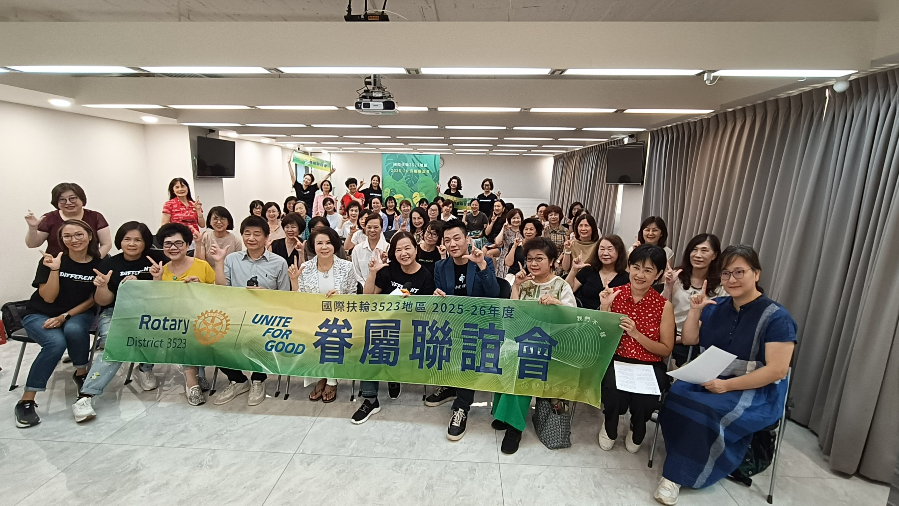
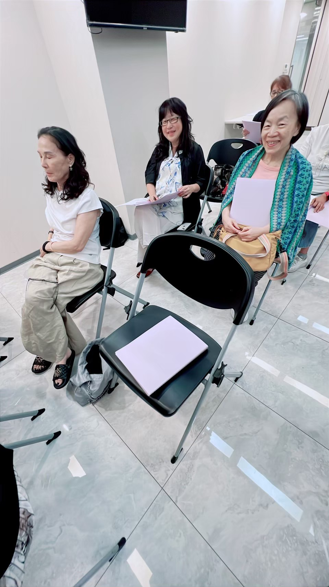
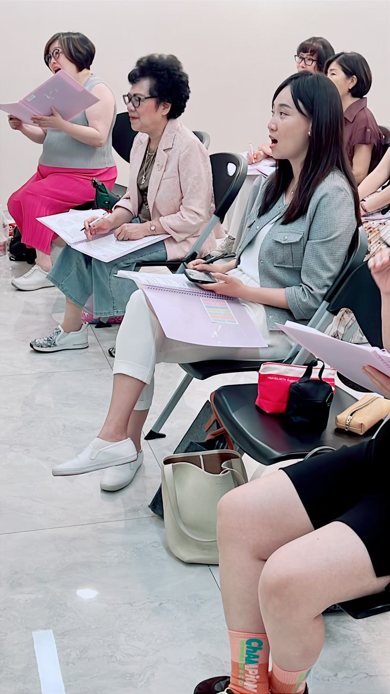
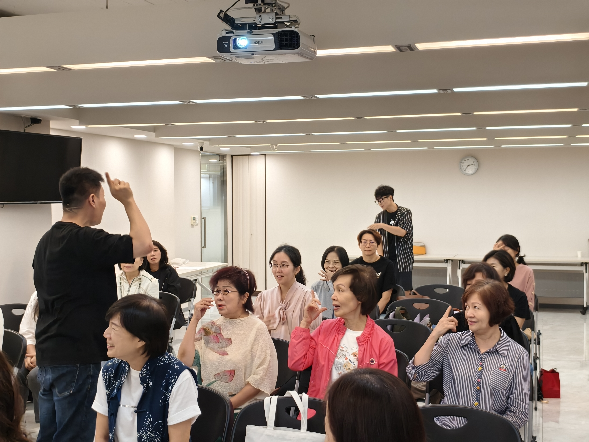

《聲聲不息》學習心得
松青社 A.G. Fruit 夫人 林玉芝
參加「聲聲不息」小班，是一段充滿驚喜的學習旅程。每次上課，老師的歌聲都讓整個空間被溫暖包圍。那份磁性與情感兼具的聲音，彷彿在訴說故事。教學內容從情感表達、呼吸運用到頭部各部位的發聲，層層拆解、親自示範，讓學習過程充滿啟發，也發現了許多以往未曾留意的細節。
老師的教學既有系統又具感染力，總能一步步引導學員找到正確的共鳴位置。不僅教「怎麼唱」，更說明「為什麼要這樣唱」，讓人逐漸理解情感、氣息與聲音之間的關聯與控制之道。講解深入淺出，以生動的比喻幫助體會聲音的流動與歌曲的情緒轉折。其中一句「請把譜唱到身體裡」，更成為上課的金句，令人回味再三。老師的耐心與鼓勵，讓許多學員放下拘謹、勇於開口；而對音樂不擅長的自己，仍在努力領會老師的提點，學習掌握音準與建立自信。
第一次聽到〈我會等〉這首歌時，只覺得旋律難以捉摸、不易駕馭。後來才明白，這是一首介於「說」與「唱」之間的「饒唱」風格作品，重點在語氣與情感的流動。透過老師句句提點與示範，逐漸體會到這首歌的靈魂所在。老師詮釋時那份真摯、細膩又有生命力的情感，令人深深感動——真的非常動聽。
另外，發聲練習的過程，也讓身體與聲音的連結更加清晰，彷彿重新喚回「用身體唱歌」的感覺。每一次練習，都是朝音樂更靠近的一步。課程團隊也十分用心，不僅準備新版放歌譜的資料夾方便筆記，還貼心準備小點心，讓每次上課都洋溢著溫暖與笑聲。
最後，感謝眷屬聯誼會規劃「聲聲不息」小班課程，能在這樣溫暖又充滿熱情的氛圍中學習，是一段值得珍藏的美好經驗。
不用懂豆芽菜，也能唱得很開心
南港社 P.P. ING 夫人 汪秀勻
對一個愛唱歌卻看不懂豆芽菜的人來說，學唱歌一直是件難事。幾乎所有唱歌班或合唱團都要看豆芽菜或簡譜，讓我常常望而卻步。
直到參加眷聯會辦的歌唱班，遇見三位老師，才真正打開了我的眼界。原來唱歌可以不用懂豆芽菜，妳也能唱得開心又動人！
用身體唱出歌，用感情說故事。老師們教我們：唱歌不是靠嘴巴，而是要打開身體這個最大的樂器；身體會呼吸、會感受、會共鳴，當妳願意讓自己放鬆、進入歌曲的畫面，聲音就會自然流出來。
每次上課，老師都會細細帶領我們解析歌曲，從氣息、情緒、畫面到肢體動作，讓歌聲充滿生命力。
像唱到：「光陰的長廊～腳步聲（要有FU， 往回踏三步）叫（要拋音）讓～」「燈一亮（ㄆㄚˋ）無人的空蕩～要把所有寂寞塞滿空氣裡～」是不是立刻有畫面感？每一次進步，都是 Amazing!
老師說：「唱歌最重要的，是畫面與感情。」從一開始連拍子都抓不準的《慢冷》《致遠道而來的我們》，到後來能自信站上舞台獨唱，每一次練習、每一次突破，真的都讓人驚呼——Amazing！
上歌唱班的過程，像是一場開心又療癒的旅程。課堂中笑聲不斷，也常有被音樂觸動的瞬間。 唯一的副作用—會變瘦！
如果妳是怕變瘦的人，請勿多服！
謝謝有妳們，讓歌聲更溫暖每堂課前後，總有美麗的眷聯會執委們貼心安排與照顧，她們讓整個學習過程更順暢、更溫暖。
謝謝老師們的專業與熱情，也謝謝所有一起唱歌的姊妹們。原來，不需懂豆芽菜，也能唱出屬於自己的快樂與感動！



